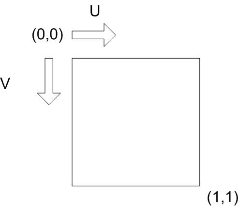

Computer graphics in Game development
Ivan Belyavtsev
25.01.2020
 [1]
vt - texture coordinatesUse barycentric coordinates
\[P(tex) = uA(tex)+vB(tex)+wC(tex)\] [3]
Let’s implement it together
1. Satran M. Texture coordinates (direct3d 9) [Electronic resource]. 2018. URL: https://docs.microsoft.com/en-us/windows/win32/direct3d9/texture-coordinates.
2. Wavefront obj file format summary // FileFormat.Info.
3. Moreton H., Stam N. Turing texture space shading [Electronic resource]. 2018. URL: https://devblogs.nvidia.com/texture-space-shading/.